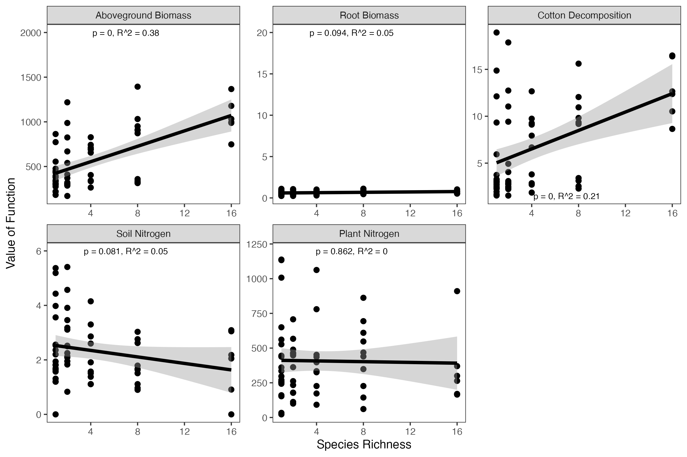
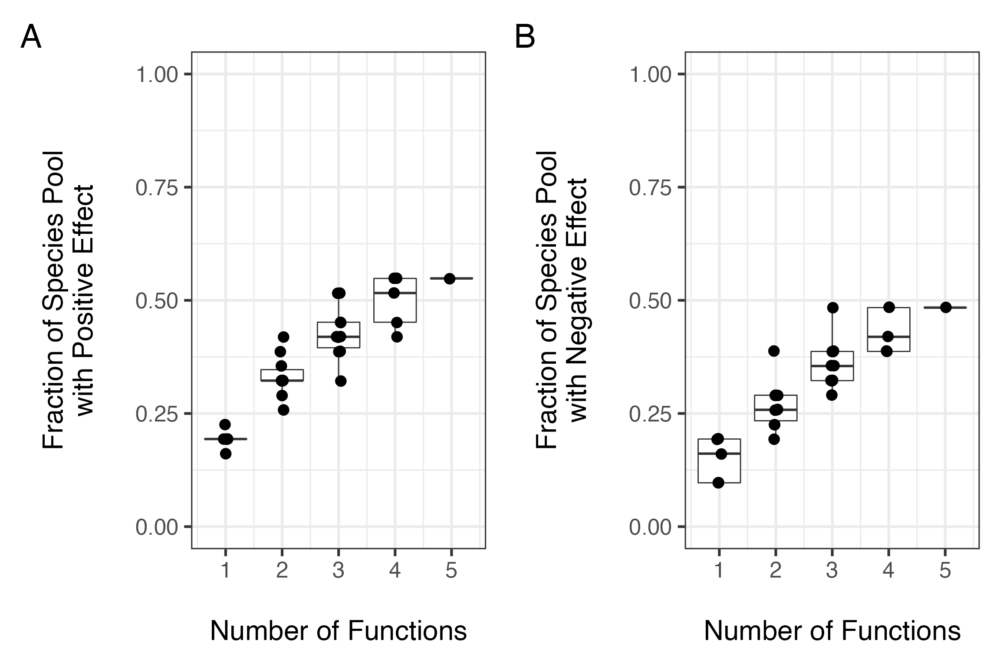
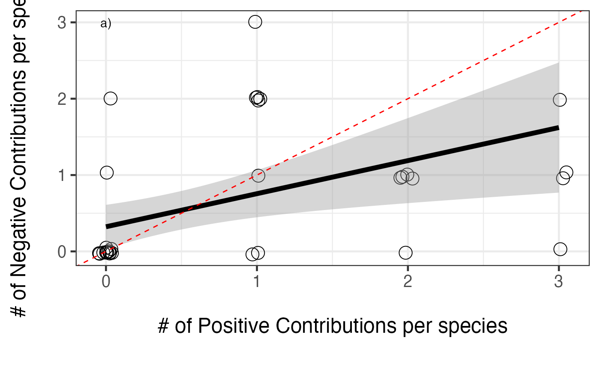

Assessing Multifunctionality with the multifunc package
Jarrett Byrnes
2018-07-04
Source:../vignettes/multifunc_biodepth.Rmd
multifunc_biodepth.RmdUsing the multifunc package for analysis of Biodiversity Ecosystem Multifunctionality Relationships in the BIODEPTH Experiment
## Intro
This is a step-by-step walk-through of the analysis of the German BIODEPTH site in the paper to illustrate the different analyses we conducted to evaluate the relationship between biodiversity and ecosystem multifunctionality.
We begin by loading the multifunc package. If it is not currently installed, it can be found on github, and installed using the devtools library.
library(multifunc)
#for plotting
library(ggplot2)
library(gridExtra)
#for data
library(reshape2)
library(plyr)
#for analysus
library(car)Next, we load in the BIODEPTH data. We use some of the helper functions in the package to identify the column numbers of the relevant functions for later use.
#Read in data to run sample analyses on the biodepth data
data(all_biodepth)
allVars<-qw(biomassY3, root3, N.g.m2, light3, N.Soil, wood3, cotton3)
varIdx<-which(names(all_biodepth) %in% allVars)As we want to work with just the German data, we next subset down the data to just Germany. We then look at the whether species were seeded or not, and determine which species were indeed seeded in Germany. If a column of species is full of zeroes, then it was not seeded in these plots. We will need the column indices of relevant species for later use in the overlap analyses.
#######
#Now, specify what data we're working with - Germany
#and the relevant variables we'll be working with
#######
germany<-subset(all_biodepth, all_biodepth$location=="Germany")
vars<-whichVars(germany, allVars)
species<-relevantSp(germany,26:ncol(germany))
spIDX <- which(names(germany) %in% species) #in case we need theseSingle Function Approach
First, we will demonstrate the qualitative single function approach. As we’re using ggplot2 for plotting, we’ll use reshape to melt the data into something suitable to make a nice faceted plot of each relationship.
germanyForPlotting<-melt(germany[,c(8,which(names(germany) %in% vars))], id.vars="Diversity")
germanyForPlotting$variable <- factor(germanyForPlotting$variable)
#make the levels of the functions into something nice for plots
levels(germanyForPlotting$variable) <- c('Aboveground Biomass', 'Root Biomass', 'Cotton Decomposition', 'Soil Nitrogen', 'Plant Nitrogen')Nest, as we want to display additional information about the fit of diversity to each function, we’ll need to iterate over each function, derive a fit, and then make some labels to be used in the eventual plot.
germanyFits <- dlply(germanyForPlotting, .(variable), function(x) lm(value ~ Diversity, data=x))
germanyLabels <- data.frame(variable = levels(germanyForPlotting$variable),
Diversity=7, value=c(2000, 1200, 1.5, 6, 20),
lab=paste(letters[1:5], ")", sep=""),
r2 = sapply(germanyFits, function(x) summary(x)$r.squared),
p = sapply(germanyFits, function(x) anova(x)[1,5])
)
germanyLabels$labels <- with(germanyLabels, paste(lab, "p =", round(p,3),expression(R^2), "=", round(r2,2), sep=" "))
germanyLabels$labels <- gsub("p = 0 ", "p < 0.001 ", germanyLabels$labels)Finally, we will put it all together into a single plot.
ggplot(aes(x=Diversity, y=value),data=germanyForPlotting) +
geom_point(size=3)+
facet_wrap(~variable, scales="free") +
theme_bw(base_size=15)+
stat_smooth(method="lm", colour="black", size=2) +
xlab("\nSpecies Richness") +
ylab("Value of Function\n") +
geom_text(data=germanyLabels,
aes(label=labels)) +
theme(panel.grid = element_blank())
Next, we ask whether the best performing species differs between functions. To do that, we have to pull out all monoculture plots, then reshape the data and run a quick qualitative analysis on it to determine the best performer.
#pull out only those plots planted in monoculture
monoGermany<- subset(germany, rowSums(germany[,spIDX])==1)
#figure out which monoculture is which
monoGermany$mono<-apply(monoGermany[,spIDX], 1, function(x) species[which(x==1)])
#melt by function for easier analysis
monoGermanyMelt<-melt(monoGermany[,c(ncol(monoGermany),which(names(monoGermany) %in% vars))], id.vars="mono")
#get the mean for each monoculture that has >1 replicate
monoGermanyMelt <- ddply(monoGermanyMelt, .(variable, mono), summarize, value=mean(value))
#now, who is the best performer?
ddply(monoGermanyMelt, .(variable), summarize, maxMono=mono[which(value==max(value, na.rm=T))])# variable maxMono
# 1 biomassY3 TRIPRA1
# 2 root3 FESRUB1
# 3 cotton3 TRIREP1
# 4 N.Soil TRIREP1
# 5 N.g.m2 TRIPRA1Overlap Approach
One of the functions we are looking at, soil N, first needs to be reflected before we can apply the overlap approach.
We can examine any single species and generate coefficient values and ‘effects’ - i.e., whether a species has a positive (1), negative (-1), or neutral (0) effect on a function. Let’s examine this for biomass production in year 3.
# $pos.sp
# [1] "DACGLO1" "FESPRA1" "LATPRA1" "LOTCOR1" "TRIPRA1" "TRIREP1"
#
# $neg.sp
# [1] "CAMPAT1" "PHLPRA1" "RANACR1"
#
# $neu.sp
# [1] "ACHMIL1" "ALOPRA1" "ANTODO1" "ARRELA1" "BROHOR1" "CENJAC1" "CHRLEU1"
# [8] "CREBIE1" "CYNCRI1" "FESRUB1" "GERPRA1" "HOLLAN1" "KNAARV1" "LEOAUT1"
# [15] "LOLPER1" "LYCFLO1" "PIMMAJ1" "PLALAN1" "RUMACE1" "TAROFF1" "VICCRA1"
# [22] "VICSEP1"
#
# $functions
# [1] "biomassY3"
#
# $coefs
# ACHMIL1 ALOPRA1 ANTODO1 ARRELA1 BROHOR1 CAMPAT1
# 0.0000 0.0000 0.0000 0.0000 0.0000 -391.5405
# CENJAC1 CHRLEU1 CREBIE1 CYNCRI1 DACGLO1 FESPRA1
# 0.0000 0.0000 0.0000 0.0000 104.6404 135.6735
# FESRUB1 GERPRA1 HOLLAN1 KNAARV1 LATPRA1 LEOAUT1
# 0.0000 0.0000 0.0000 0.0000 248.5566 0.0000
# LOLPER1 LOTCOR1 LYCFLO1 PHLPRA1 PIMMAJ1 PLALAN1
# 0.0000 375.6694 0.0000 -297.7452 0.0000 0.0000
# RANACR1 RUMACE1 TAROFF1 TRIPRA1 TRIREP1 VICCRA1
# -140.2996 0.0000 0.0000 492.6311 325.0173 0.0000
# VICSEP1 (Intercept)
# 0.0000 335.8382
#
# $effects
# ACHMIL1 ALOPRA1 ANTODO1 ARRELA1 BROHOR1 CAMPAT1 CENJAC1 CHRLEU1 CREBIE1
# 0 0 0 0 0 -1 0 0 0
# CYNCRI1 DACGLO1 FESPRA1 FESRUB1 GERPRA1 HOLLAN1 KNAARV1 LATPRA1 LEOAUT1
# 0 1 1 0 0 0 0 1 0
# LOLPER1 LOTCOR1 LYCFLO1 PHLPRA1 PIMMAJ1 PLALAN1 RANACR1 RUMACE1 TAROFF1
# 0 1 0 -1 0 0 -1 0 0
# TRIPRA1 TRIREP1 VICCRA1 VICSEP1
# 1 1 0 0Using this as our starting point, we can use the getRedundancy function to generate a) an effect matrix for all functions, b) a coefficient matrix for all functions, and c) a standardized coefficient matrix for all functions.
redund<-getRedundancy(vars, species, germany)
coefs<-getRedundancy(vars, species, germany, output="coef")
stdCoefs<-stdEffects(coefs, germany, vars, species)
#for example
redund# ACHMIL1 ALOPRA1 ANTODO1 ARRELA1 BROHOR1 CAMPAT1 CENJAC1 CHRLEU1
# biomassY3 0 0 0 0 0 -1 0 0
# root3 1 0 -1 0 1 0 0 0
# N.g.m2 1 0 0 -1 0 0 0 0
# N.Soil -1 0 -1 0 1 -1 0 0
# cotton3 0 1 1 0 -1 1 0 0
# CREBIE1 CYNCRI1 DACGLO1 FESPRA1 FESRUB1 GERPRA1 HOLLAN1 KNAARV1
# biomassY3 0 0 1 1 0 0 0 0
# root3 0 0 0 0 1 0 -1 0
# N.g.m2 -1 0 0 1 0 0 -1 0
# N.Soil 1 0 1 -1 0 0 0 0
# cotton3 0 0 0 0 0 0 0 0
# LATPRA1 LEOAUT1 LOLPER1 LOTCOR1 LYCFLO1 PHLPRA1 PIMMAJ1 PLALAN1
# biomassY3 1 0 0 1 0 -1 0 0
# root3 1 0 1 0 0 0 0 -1
# N.g.m2 0 0 1 1 0 -1 0 -1
# N.Soil 1 0 0 1 0 1 0 0
# cotton3 -1 0 -1 0 0 0 0 1
# RANACR1 RUMACE1 TAROFF1 TRIPRA1 TRIREP1 VICCRA1 VICSEP1
# biomassY3 -1 0 0 1 1 0 0
# root3 -1 0 0 -1 0 0 0
# N.g.m2 -1 0 0 1 1 0 0
# N.Soil 1 0 0 -1 -1 0 0
# cotton3 0 0 0 1 1 0 0Using the effect matrix, we then estimate the average number of species affecting all possible combinations of functions - both positive and negative - and then plot the results.
#plot the num. functions by fraction of the species pool needed
posCurve<-divNeeded(redund, type="positive")
posCurve$div<-posCurve$div/ncol(redund)
pc<-qplot(nfunc, div, data=posCurve, group=nfunc, geom=c("boxplot"))+
geom_jitter(size=4, position = position_jitter(height=0.001, width = .04))+
ylab("Fraction of Species Pool\nwith Positive Effect\n")+
xlab("\nNumber of Functions")+theme_bw(base_size=24)+ylim(c(0,1))
negCurve<-divNeeded(redund, type="negative")
negCurve$div<-negCurve$div/ncol(redund)
nc<-qplot(nfunc, div, data=negCurve, group=nfunc, geom=c("boxplot"))+
geom_jitter(size=4, position = position_jitter(height=0.001, width = .04))+
ylab("Fraction of Species Pool\nwith Negative Effect\n")+
xlab("\nNumber of Functions")+theme_bw(base_size=24)+ylim(c(0,1))
#combine these into one plot
grid.arrange(pc+annotate("text", x=1, y=1, label="a)"), nc+annotate("text", x=1, y=1, label="b)"), ncol=2)
We could have also looked at overlap indices, such as the Sorenson index.
allOverlapPos<-ddply(data.frame(m=2:nrow(redund)), .(m), function(adf) getOverlapSummary(redund, m=adf$m[1], denom="set"))One we’ve examined the consequences of functional overlap, we can then move on to compare the number and size of these effects. First, what is the relative balance of positive to negative contributions for each species?
posNeg<-data.frame(Species = colnames(redund),
Pos = colSums(filterOverData(redund)),
Neg = colSums(filterOverData(redund, type="negative")))
#plot it
ggplot(aes(x=Pos,y= Neg), data=posNeg) +
geom_jitter(position = position_jitter(width = 0.05, height = 0.05), size=5, shape=1) +
theme_bw(base_size=18) +
xlab("\n# of Positive Contributions per species\n") +
ylab("# of Negative Contributions per species\n") +
annotate("text", x=0, y=3, label="a)") +
stat_smooth(method="glm", colour="black", size=2, family=poisson(link="identity"))
So, a generally positive relationship. We can see from the figure that the slope is slightly less than 1:1, so positive effects accumulate faster. Still, more positive effects = more negative effects. What about the size of those positive versus negative effects?
#now get the standardized effect sizes
posNeg<-within(posNeg, {
stdPosMean <- colSums(filterCoefData(stdCoefs))/Pos
stdPosMean[which(is.nan(stdPosMean))] <-0
stdNegMean <- colSums(filterCoefData(stdCoefs, type="negative"))/Neg
stdNegMean[which(is.nan(stdNegMean))] <-0
})
ggplot(aes(x=stdPosMean,y= stdNegMean), data=posNeg) +
# geom_point(size=3) +
geom_jitter(position = position_jitter(width = .02, height = .02), size=5, shape=1) +
theme_bw(base_size=18) +
xlab("\nAverage Standardized Size of\nPositive Contributions") +
ylab("Average Standardized Size of\nNegative Contributions\n") +
stat_smooth(method="lm", colour="black", size=2)+
annotate("text", x=0, y=0.25, label="b)") +
geom_abline(slope=-1, intercept=0, size=1, colour="black", lty=3)Averaging Approach
Now we’ll try the averaging approach. The first step is to create a set of columns where we have standardized all of the functions of interest, and then create an average of those standardized functions.
#add on the new functions along with the averaged multifunctional index
germany<-cbind(germany, getStdAndMeanFunctions(germany, vars))
#germany<-cbind(germany, getStdAndMeanFunctions(germany, vars, standardizeZScore))We can then plot the averaged multifunctionality quite simply
#plot it
ggplot(aes(x=Diversity, y=meanFunction),data=germany)+geom_point(size=3)+
theme_bw(base_size=15)+
stat_smooth(method="lm", colour="black", size=2) +
xlab("\nSpecies Richness") +
ylab("Average Value of Standardized Functions\n")We may want to look at all of the functions on a standardized scale, and add in the averaged line for comparison as well. We can do this by reshaping the data, and plotting it.
#reshape for plotting everything with ggplot2
germanyMeanForPlotting<-melt(germany[,c(8,129:134)], id.vars="Diversity")
#nice names for plotting
levels(germanyMeanForPlotting$variable) <- c('Aboveground Biomass', 'Root Biomass', 'Cotton Decomposition', 'Soil Nitrogen', 'Plant Nitrogen', 'Mean Multifuncion Index')
#plot it
ggplot(aes(x=Diversity, y=value),data=germanyMeanForPlotting)+geom_point(size=3)+
facet_grid(~variable) +
theme_bw(base_size=15)+
stat_smooth(method="lm", colour="black", size=2) +
xlab("\nSpecies Richness") +
ylab("Standardized Value of Function\n")Last, let’s test the statistical fit of the effect of diversity on the averaged multifunctionality index.
# Anova Table (Type II tests)
#
# Response: meanFunction
# Sum Sq Df F value Pr(>F)
# Diversity 0.29502 1 32.63 4.042e-07 ***
# Residuals 0.52440 58
# ---
# Signif. codes: 0 '***' 0.001 '**' 0.01 '*' 0.05 '.' 0.1 ' ' 1#
# Call:
# lm(formula = meanFunction ~ Diversity, data = germany)
#
# Residuals:
# Min 1Q Median 3Q Max
# -0.200533 -0.069321 0.006506 0.062717 0.288942
#
# Coefficients:
# Estimate Std. Error t value Pr(>|t|)
# (Intercept) 0.385422 0.017049 22.606 < 2e-16 ***
# Diversity 0.015360 0.002689 5.712 4.04e-07 ***
# ---
# Signif. codes: 0 '***' 0.001 '**' 0.01 '*' 0.05 '.' 0.1 ' ' 1
#
# Residual standard error: 0.09509 on 58 degrees of freedom
# Multiple R-squared: 0.36, Adjusted R-squared: 0.349
# F-statistic: 32.63 on 1 and 58 DF, p-value: 4.042e-07Threshold Approach
First, we need to create a new data set that looks at the number of functions greater than or equal to a threshold across a wide range of thresholds.
germanyThresh<-getFuncsMaxed(germany, vars, threshmin=0.05, threshmax=0.99, prepend=c("plot","Diversity"), maxN=7)Next, let’s perform an analysis on just the 0.8 threshold data.
mfuncGermanyLinear08<-glm(funcMaxed ~ Diversity, data=subset(germanyThresh, germanyThresh$thresholds=="0.8"), family=quasipoisson(link="identity"))
Anova(mfuncGermanyLinear08, test.statistic="F")# Analysis of Deviance Table (Type II tests)
#
# Response: funcMaxed
# Error estimate based on Pearson residuals
#
# Sum Sq Df F value Pr(>F)
# Diversity 8.947 1 10.512 0.001968 **
# Residuals 49.364 58
# ---
# Signif. codes: 0 '***' 0.001 '**' 0.01 '*' 0.05 '.' 0.1 ' ' 1#
# Call:
# glm(formula = funcMaxed ~ Diversity, family = quasipoisson(link = "identity"),
# data = subset(germanyThresh, germanyThresh$thresholds ==
# "0.8"))
#
# Deviance Residuals:
# Min 1Q Median 3Q Max
# -1.92228 -1.15215 -0.02578 0.50067 2.09248
#
# Coefficients:
# Estimate Std. Error t value Pr(>|t|)
# (Intercept) 0.49460 0.13928 3.551 0.000769 ***
# Diversity 0.08456 0.03020 2.800 0.006938 **
# ---
# Signif. codes: 0 '***' 0.001 '**' 0.01 '*' 0.05 '.' 0.1 ' ' 1
#
# (Dispersion parameter for quasipoisson family taken to be 0.8511272)
#
# Null deviance: 67.249 on 59 degrees of freedom
# Residual deviance: 58.302 on 58 degrees of freedom
# AIC: NA
#
# Number of Fisher Scoring iterations: 4To get a better sense of how robust these results are to threshold choice, let’s plot the diversity versus number of functions greater than or equal to a threshold for four different thresholds.
gcPlot<-subset(germanyThresh, germanyThresh$thresholds %in% qw(0.2, 0.4, 0.6, 0.8)) #note, using qw as %in% is a string comparison operator
gcPlot$percent<-paste(100*gcPlot$thresholds, "%", sep="")
qplot(Diversity, funcMaxed, data=gcPlot, facets=~percent) +
stat_smooth(method="glm", family=quasipoisson(link="identity"), colour="red", lwd=1.2) +
ylab(expression("Number of Functions" >= Threshold)) +
xlab("Species Richness") +
theme_bw(base_size=14) +
geom_text(data=data.frame(percent = unique(gcPlot$percent),
lab = paste(letters[1:4], ")", sep=""),
Diversity=2,
funcMaxed=6
), mapping=aes(x=Diversity, y=funcMaxed, label=lab))Given that variation, let’s look at the entire spread of thresholds.
germanyThresh$percent <- 100*germanyThresh$thresholds
ggplot(data=germanyThresh, aes(x=Diversity, y=funcMaxed, group=percent)) +
ylab(expression("Number of Functions" >= Threshold)) +
xlab("Species Richness") +
stat_smooth(method="glm", family=quasipoisson(link="identity"), lwd=0.8, fill=NA, aes(color=percent)) +
theme_bw(base_size=14) +
scale_color_gradient(name="Percent of \nMaximum", low="blue", high="red")Multiple Threshold Approach
To systematically explore the variation in the relationship based on threshold choice, let’s look at the slope of the relationship and its confidence interval over all thresholds. We will then plot this relationship.
germanyLinearSlopes<-getCoefTab(funcMaxed ~ Diversity, data=germanyThresh, coefVar="Diversity", family=quasipoisson(link="identity"))
######
# Plot the values of the diversity slope at
# different levels of the threshold
######
germanSlopes <- ggplot(germanyLinearSlopes, aes(x=thresholds)) +
geom_ribbon(fill="grey50", aes(x=thresholds*100, ymin=Estimate-1.96*germanyLinearSlopes[["Std. Error"]],
ymax=Estimate+1.96*germanyLinearSlopes[["Std. Error"]])) +
geom_point(aes(x=thresholds*100, y=Estimate)) +
ylab("Change in Number of Functions per Addition of 1 Species\n") +
xlab("\nThreshold (%)") +
geom_abline(intercept=0, slope=0, lwd=1, linetype=2) +
theme_bw(base_size=14)
germanSlopes
We can easily see a number of indices mentioned in the text - Tmin, Tmax, Tmde, etc. Let’s pull them out with our indices function.
# Tmin Tmax Tmde Rmde.linear Pmde.linear Mmin Mmax Mmde
# 542 0.14 0.91 0.48 0.168293 0.5385377 5.056142 1.173544 4.429463
# nFunc
# 542 5We can now add annotations to our earlier plot to make it more rich, and show us those crucial threshold values.
# [1] 0.168293germanyThresh$IDX <- 0
germanyThresh$IDX [which(germanyThresh$thresholds %in%
c(germanIDX$Tmin, germanIDX$Tmax, germanIDX$Tmde))] <- 1
ggplot(data=germanyThresh, aes(x=Diversity, y=funcMaxed, group=percent)) +
ylab(expression("Number of Functions" >= Threshold)) +
xlab("Species Richness") +
geom_smooth(method="glm", family=quasipoisson(link="identity"),
fill=NA, aes(color=percent, lwd=IDX)) +
theme_bw(base_size=14) +
scale_color_gradient(name="Percent of \nMaximum", low="blue", high="red") +
scale_size(range=c(0.3,5), guide="none") +
annotate(geom="text", x=0, y=c(0.2,2,4.6), label=c("Tmax", "Tmde", "Tmin")) +
annotate(geom="text", x=16.7, y=c(germanIDX$Mmin, germanIDX$Mmax, germanIDX$Mmde), label=c("Mmin", "Mmax", "Mmde"))
Or we can see where they are on the curve of slopes at different thresholds.
Comparison of Sites
Furthermore, we can extend this to the more of the BIODEPTH dataset to compare the strength of multifunctionality across sites. We begin by loading in the data and calculating slopes at different thresholds. We’ll subset down to Sheffield, Portugal, and Sweden for simplicity, but this could be done for all sites quite easily.
####
# Now we will look at the entire BIODEPTH dataset
#
# Note the use of ddply from plyr to generate the new data frame using all locations from biodepth.
# If you're not using plyr for your data aggregation, you should be. http://plyr.had.co.nz/
# It will save you a lot of time and headaches in the future.
####
#Read in data to run sample analyses on the biodepth data
data(all_biodepth)
sub_biodepth<-subset(all_biodepth, all_biodepth$location %in% c("Sheffield", "Portugal", "Sweden"))
sub_biodepth$location<-factor(sub_biodepth$location, levels=c("Portugal", "Sweden", "Sheffield"))
allVars<-qw(biomassY3, root3, N.g.m2, light3, N.Soil, wood3, cotton3)
varIdx<-which(names(sub_biodepth) %in% allVars)
#re-normalize so that everything is on the same
#sign-scale (e.g. the maximum level of a function is
#the "best" function)
sub_biodepth<-ddply(sub_biodepth, .(location), function(adf){
adf$light3<- -1*adf$light3+max(adf$light3, na.rm=T)
adf$N.Soil<- -1*adf$N.Soil +max(adf$N.Soil, na.rm=T)
adf
})
#get thresholds
bdThreshes<-ddply(sub_biodepth, .(location), function(x) getFuncsMaxed(x, vars=allVars, prepend=c("plot","Diversity"), maxN=8))
####look at slopes
#note, maxIT argument is due to some fits needing more iterations to converge
bdLinearSlopes<-getCoefTab(funcMaxed ~ Diversity, data=bdThreshes, groupVar=c("location", "thresholds"),
coefVar="Diversity", family=quasipoisson(link="identity"), control=list(maxit=800))Great, now we can look at the indices of these three new sites. We’ll add Germany in so we can compare them against the German values.
indexTable <- lapply(levels(bdLinearSlopes$location), function(x){
slopedata <- subset(bdLinearSlopes, bdLinearSlopes$location==x)
threshdata <- subset(bdThreshes, bdThreshes$location==x)
ret <- getIndices(slopedata, threshdata, funcMaxed ~ Diversity)
ret<-cbind(location=x, ret)
ret
})
indexTable <- ldply(indexTable)
indexTable <- rbind(data.frame(location="Germany", germanIDX), indexTable)
indexTable# location Tmin Tmax Tmde Rmde.linear Pmde.linear Mmin Mmax
# 542 Germany 0.14 0.91 0.48 0.1682930 0.5385377 5.056142 1.173544
# 1 Portugal 0.08 0.45 0.29 0.2166689 0.5055607 6.124575 3.926849
# 2 Sweden NA 0.71 0.43 0.2676730 0.5353460 NA 2.176587
# 3 Sheffield 0.57 NA 0.76 0.1911508 0.5734523 4.259683 NA
# Mmde nFunc
# 542 4.429463 5
# 1 6.452464 6
# 2 4.775775 6
# 3 3.937500 4Finally, let’s compare a visualization of the relevant curves at different thresholds to the relationship between threshold and slope of curve to give the table of numbers some visual meaning.
library(gridExtra)
bdCurvesAll<-qplot(Diversity, funcMaxed, data=bdThreshes, group=thresholds, alpha=I(0)) +
facet_wrap(~location)+#, scales="free") +
scale_color_gradient(low="blue", high="red", name="Proportion of \nMaximum", guide=FALSE) +
stat_smooth(method="glm", lwd=0.8, fill=NA, family=gaussian(link="identity"), control=list(maxit=200), aes(color=thresholds)) +
ylab("\nNumber of Functions ≥ Threshold\n\n") +
xlab("Species Richness") +
theme_bw(base_size=15) +
geom_text(data=data.frame(location = levels(bdThreshes$location), lab = paste(letters[1:3], ")", sep=""), thresholds=c(NA, NA, NA)), x=1, y=7, mapping=aes(label=lab))
#Plot it!
slopePlot<-ggplot(bdLinearSlopes, aes(x=thresholds, y=Estimate)) +
geom_ribbon(fill="grey50", aes( x=thresholds*100,ymin=Estimate-2*bdLinearSlopes[["Std. Error"]],
ymax=Estimate+2*bdLinearSlopes[["Std. Error"]])) +
geom_point(aes(x=thresholds*100, y=Estimate)) +
ylab("Change in Number of Functions \nper Addition of 1 Species\n") +
xlab("Threshold (%)") +
facet_wrap(~location)+#, scale="free") +
geom_abline(intercept=0, slope=0, lwd=0.6, linetype=2) +
theme_bw(base_size=15)+
geom_text(data=data.frame(location = levels(bdThreshes$location),
lab = paste(letters[4:6], ")", sep=""),
thresholds=c(NA, NA, NA)), x=0.05, y=0.27, mapping=aes(label=lab))
###Plot them in a single figure
grid.arrange(bdCurvesAll,
slopePlot)